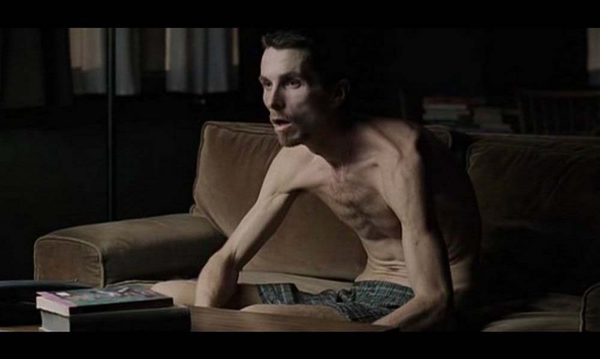

O operário Trevor Reznik sofre tanto de insônia, que está prejudicando seu peso e sua saúde mental. Quando Trevor involuntariamente provoca um acidente de trabalho que fere um colega, ele começa a se tornar ainda mais problemático e, apesar de um relacionamento com Stevie, uma bonita prostituta, Trevor começa a culpar seus problemas em uma figura enigmática chamada Ivan.
